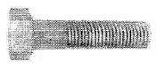
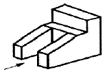
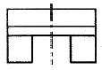
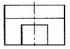
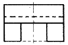
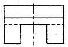

제강기능사 (2012-02-12 기출문제)
1과목: 임의 구분
1. 흑연을 구상화시키기 위해 선철을 용해하여 주입 전에 첨가하는 것은?
- Cs
- Cr
- Mg
- Na2CO3
(정답률: 65%)

2. 고속베어링에 적합한 것으로 주요 성분이 Cu + Pb인 합금은?
- 톰백
- 포금
- 켈멧
- 인청동
(정답률: 76%)
3. 알루미늄(Al)의 특성을 설명한 것 중 옳은 것은?
- 온도에 관계없이 항상 체심입방격자이다.
- 강(steel)에 비하여 비중이 가볍다.
- 주조품 제작시 주입온도는 1000℃ 이다.
- 전기 전도물이 구리보다 높다.
(정답률: 80%)
4. 금속간 화합물에 대한 설명으로 옳은 것은?
- 변형하기 쉽고, 인성이 크다.
- 일반적으로 복잡한 결정구조를 갖는다.
- 전기저항이 낮고, 금속적인 성질이 우수하다.
- 성분금속 중 낮은 용융점을 갖는다.
(정답률: 75%)
5. 고탄소 크롬베어링강의 탄소함유량 범위(%)로 옳은 것은?
- 0.12 ~ 0.17%
- 0.21 ~ 0.45%
- 0.95 ~ 1.10%
- 2.20 ~ 4.70%
(정답률: 63%)
6. 소성변형이 일어나면 금속이 경화하는 현상을 무엇이라 하는가?
- 가공경화
- 탄성경화
- 취성경화
- 자연경화
(정답률: 85%)
7. 다음 중 용융점이 가장 낮은 금속은?
- Zn
- Sb
- Pb
- Sn
(정답률: 57%)
8. 4%Cu, 2%Ni 및 1.5%Mg 이 첨가된 알루미늄 합금으로 내연기관용 피스톤이나 실린더 헤드 등으로 사용되는 재료는?
- Y 합금
- Lo-Fx 합금
- 라우탈(lautal)
- 하이드로날륨(hydronalium)
(정답률: 75%)
9. 문쯔메탈(Muntz metal)이라 하며 탈아연 부식이 발생하기 쉬운 동합금은?
- 6-4 황동
- 주석 청동
- 네이벌 황동
- 애드미럴티 황동
(정답률: 80%)
10. 다음 중 반자성체에 해당하는 금속은?
- 철(Fe)
- 니켈(Ni)
- 안티몬(Sb)
- 코발트(Co)
(정답률: 79%)
11. α고용체 + 용융액 → β고용체의 반응을 나타내는 것은?
- 공석반응
- 공정반응
- 포정반응
- 편정반응
(정답률: 73%)
12. 탄소강의 표준조직에 해당하는 것은?
- 펄라이트와 마텐자이트
- 페라이트와 소르바이트
- 펄라이트와 페라이트
- 페라이트와 베이나이트
(정답률: 69%)
13. 백선철을 900 ~ 1000℃ 로 가열하여 탈탄시켜 만든 주철은?
- 칠드 주철
- 합금 주철
- 편상흑연 주철
- 백심가단 주철
(정답률: 60%)
14. 라우탈은 Al-Cu-Si 합금이다. 이중 3~8% Si를 첨가하여 향상되는 성질은?
- 주조성
- 내열성
- 피삭성
- 내식성
(정답률: 46%)
15. 금속의 표면에 Zn을 침투시켜 대기 중 철강의 내식성을 증대시켜 주기 위한 처리법은?
- 세라다이징
- 크로마이징
- 칼로라이징
- 실리코나이징
(정답률: 58%)
16. 투상도의 선정 방법으로 틀린 것은?
- 숨은선이 적은 쪽으로 투상 한다.
- 물체의 오른쪽과 왼쪽이 대칭일 때에는 좌측면도는 생략할 수 있다.
- 물체의 길이가 길 때, 정면도외 평면도만으로 표시 할 수 있을 경우에는 측면도를 생략한다.
- 물체의 모양과 특징을 가장 잘 나타낼 수 있는 면을 평면도로 선정한다.
(정답률: 64%)
17. 제도 도면의 치수 기입 원칙에 대한 설명으로 틀린 것은?
- 치수선은 부품의 모양을 나타내는 외형선과 평행하게 그어 표시한다.
- 길이, 높이 치수의 표시 위치는 되도록 정면도에 표시한다.
- 치수는 계산하여 구할 수 있는 치수는 기입하지 않으며, 지시선은 굵은 실선으로 표시한다.
- 대상물의 기능, 제작, 조립 등을 고려하여 필요 하다고 생각되는 치수를 명료하게 기입한다.
(정답률: 77%)
18. KS D 3503에 의한 SS330 으로 표시된 재료 기호에서 330이 의미하는 것은?
- 재질 번호
- 재질 등급
- 탄소 함유량
- 최저 인장강도
(정답률: 74%)
19. 한국산업표준 중에서 공업 부문에 쓰이는 제도의 기본적이며 공통적인 사항인 도면의 크기, 투상법, 선, 작도 일반, 단면도, 글자, 치수 등을 규정한 제도 통칙은?
- KS A 00⑤
- KS B 00⑤
- KS D 00⑤
- KS V 00⑤
(정답률: 79%)
20. 그림과 같은 육각 볼트를 제작용 약도로 그릴 때 선의 종류를 설명한 것 중 옳은 것은?

- 볼트 머리의 모든 외형선은 직선으로 그린다.
- 골지름을 나타내는 선은 굵은 실선으로 그린다.
- 가려서 보이지 않는 나사부는 가는 실선으로 그린다.
- 완전 나사부와 불완전 나사부의 경계선은 굵은 실선으로 그린다.
(정답률: 52%)
2과목: 임의 구분
21. 화살표 방향에서 본 투상도가 정면도이면 평면도로 옳은 것은?





(정답률: 73%)
22. 제도에서 타원 등의 기본 도형이나 문자, 숫자, 기호 및 부호 등을 원하는 모양으로 정확하게 그릴 수 있는 것은?
- 형판
- 운형자
- 지우개판
- 디바이더
(정답률: 69%)
23. 촉도를 기입 하는 방법으로 틀린 것은?
- 척도에서 1:2는 축척이고, 2:1은 배척이다.
- 척도는 도면의 오른쪽 아래에 있는 표제란에 기입한다.
- 표제란이 없을 경우에는 척도의 기입을 생략해도 무방하다.
- 같은 도면에 다른 척도를 사용할 때 각 품번 옆에 사용된 척도를 기입한다.
(정답률: 80%)
24. 치수 숫자와 같이 사용하는 기호 중 구의 반지름 치수를 나타내는 기호는?
- SR
- □
- t
- C
(정답률: 81%)
25. 물체를 중심에서 반으로 절단하여 단면도로 나타내는 것은?
- 부분 단면도
- 회전 단면도
- 온 단면도
- 한쪽 단면도
(정답률: 31%)
26. 표면거칠기 기호에 의한 줄 다듬질의 약호는?
- FB
- FS
- FL
- FF
(정답률: 63%)
27. 위 치수 허용치와 아래 치수 허용치와의 차는?
- 기준선 공차
- 기준 공차
- 기본 공차
- 치수 공차
(정답률: 84%)
28. 연속주조공정에 해당하는 주요 설비가 아닌 것은?
- 몰드(Mold)
- 턴디시(Tundish)
- 더미바(Dummy Bar)
- 레이들 로(Ladle Furance)
(정답률: 67%)
29. 제강설비 수리작업시 일반적인 가연성 가스 허용 농도 기준으로 옳은 것은?
- 폭발 하한계의 1/2 이하
- 폭발 하한계의 1/3 이하
- 폭발 하한계의 1/4 이하
- 폭발 하한계의 1/5 이하
(정답률: 62%)
30. 아크식 전기로의 작업순서를 옳게 나열한 것은?
- 장입 → 산화기 → 용해기 → 환원기 → 출강
- 장입 → 용해기 → 산화기 → 환원기 → 출강
- 장입 → 용해기 → 환원기 → 산화기 → 출강
- 장입 → 환원기 → 용해기 → 산화기 → 출강
(정답률: 67%)
31. 염기성 내화물의 주 종류가 아닌 것은?
- 크로마그질
- 규석질
- 돌로마이트질
- 마그네시아질
(정답률: 59%)
32. 흡인 탈가스법(DH법)에서 제거되지 않는 원소는?
- 산소
- 탄소
- 규소
- 수소
(정답률: 49%)
33. 주입 작업시 하주법에 대한 설명으로 틀린 것은?
- 용강이 조용하게 상승하므로 강과 표면이 깨끗하다.
- 주형 내 용강면을 관찰할 수 있어 탈산 조정이 쉽다.
- 주형 내 용강면을 관찰할 수 있어 주입속도 조정이 쉽다.
- 작은 강괴를 한꺼번에 많이 얻을 수 없고, 주입 시간은 짧아진다.
(정답률: 76%)
34. Soft Blow법에 대한 설명으로 틀린 것은?
- 고탄소강의 용제(熔製)에 효과적이다.
- Soft Blow를 하면 T·Fe가 높은 발포성강재(foaming slag)가 생성되어 탈인이 잘된다.
- 산화성 강재와 고염기도 조업을 하면 탈인, 탈황을 효과적으로 할 수 있다.
- 취련압력을 높이거나 랜스 높이를 보통보다 낮게하는 취련하는 방법이다.
(정답률: 68%)
35. 다음 중 무재해운동의 3원칙이 아닌 것은?
- 무익 원칙
- 전원 참가의 원칙
- 이익 집단의 원칙
- 선취 해결의 원칙
(정답률: 78%)
36. 고조파 유도로에서 유도 저항 증가에 따른 전류의 손실을 방지하고 전력 효율을 개선하기 위한 것은?
- 로체 설비
- 로용 변압기
- 진상 콘덴서
- 고주파 전원 장치
(정답률: 56%)
37. 고인(P) 선철을 처리하는 방법으로 노체를 기울인 상태에서 고속으로 회전하여 취련하는 방법은?
- 가탄법
- 로터법
- 칼도법
- 캐치카아본법
(정답률: 62%)
38. 재해가 발생되었을 때 대처사항 중 가장 먼저 해야 할 일은?
- 보고를 한다.
- 응급조치를 한다.
- 사고원인을 파악한다.
- 사고대책을 세운다.
(정답률: 72%)
39. 연주작업 중 주형 내 용강표면으로부터 주편의 Core(내부)부가 완전 응고될 때까지의 길이는?
- 주편응고길이(Metallugical length)
- 주편응고 Taper길이
- AMCL(Air Mist Cooling Length)
- EMBRL(Electromagnetic Mold Brake Ruler Length)
(정답률: 73%)
40. 전기로 조업에서 환원철을 사용하였을 때의 설명으로 옳은 것은?
- 맥석분이 적다.
- 철분의 회수가 좋다.
- 생산성이 저하된다.
- 다량의 산화칼슘이 필요하다.
(정답률: 50%)
3과목: 임의 구분
41. LD 전로에 요구되는 산화칼슘의 성질을 설명한 것 중 틀린 것은?
- 소성이 잘 되어 반응성이 좋을 것
- 세립이고 정립되어 있어 반응성이 좋을 것
- 황, 이산화규소 등의 불순물을 되도록 많이 포함 할 것
- 가루가 적어 다룰 때의 손실이 적을 것
(정답률: 79%)
42. 연주법에서 주편품질에 미치는 주조온도의 영향을 설명한 것 중 옳은 것은?
- 용강 내에 혼재하는 개재물의 부상온도는 높은 편이 좋고, 응고에 따른 macro 편석에 대하여는 고온주조를 해야 한다.
- 용강 내에 혼재하는 개재물의 부상온도는 낮은 편이 좋고, 응고에 따른 macro 편석에 대하여는 저온주조를 해야 한다.
- 용강 내에 혼재하는 개재물의 부상온도는 높은 편이 좋고, 응고에 따른 macro 편석에 대하여는 저온주조를 해야 한다.
- 용강 내에 혼재하는 개재물의 부상온도는 낮은 편이 좋고, 응고에 따른 macro 편석에 대하여는 고온주조를 해야 한다.
(정답률: 52%)
43. 내화재료의 구비조건으로 틀린 것은?
- 열전도율과 팽창율이 높을 것
- 고온에서 기계적 강도가 클 것
- 고온에서 전기적 절연성이 클 것
- 화학적인 분위기하에서 안정된 물질일 것
(정답률: 61%)
44. 용선의 탈황 반응 결과 일산화탄소가 발생하고 이것의 끓음 현상에 의해 탈황 생성물을 슬래그로 부상 시키는 탈황제는?
- 탄산나트륨(Na2CO3)
- 탄화칼슘(CaC2)
- 산화칼슘(CaO)
- 플루오르화칼슘(CaF2)
(정답률: 45%)
45. 탈산 및 탈황작용을 겸하는 것은?
- Mn
- Si
- Al
- C
(정답률: 47%)
46. 다음 중 강괴의 편석 발생이 적은 상태에서 많은 순서로 나열한 것은?
- 킬드강 - 캐프드강 - 림드강
- 킬드강 - 림드강 - 캐프드강
- 캐프드강 - 킬드강 - 림드강
- 캐프드강 - 림드강 - 킬드강
(정답률: 58%)
47. 전로조업에서 취련개시 및 취련도중에 첨가하여 슬래그의 유동성을 향상시켜 반응성을 높여 주는 것은?
- 형석
- 생석회
- 연와설
- 돌로마이트
(정답률: 69%)
48. 연주법에서 완전응고 후 압연하는 sizing mill 법은 교정기를 나온 주편에 재가열되어 압연기에 들어가게 된다. 이 방법의 장점이 아닌 것은?
- 강 조직의 조대화
- 주편의 품질 개선
- 생산량의 증가
- 주편의 현열 이용
(정답률: 42%)
49. 복합취련법에 대한 설명으로 틀린 것은?
- 취련시간이 단축된다.
- 용강의 실수율이 높다.
- 위치에 따른 성분 편차는 없으나 온도의 편차가 심하다.
- 강욕 중의 C 와 0 의 반응이 활발해지므로 극저탄소강 등 청정강의 제조가 유리하다.
(정답률: 65%)
50. 전기로 로외 정련작업의 VOD 설비에 해당되지 않는 것은?
- 배기 장치를 갖춘 진공실
- 아르곤 가스 취입 장치
- 산소 취입용 랜스
- 아크 가열 장치
(정답률: 54%)
51. 용선 사용량이 80ton, 고철 사용량이 20ton, 용선 중 Si 의 양이 0.5% 이었다면 Si 와 이론적으로 반응하는 산소의 양은 약 몇 kg인가? (단, O2의 분자량은 32, Si 의 원자량은 28 이다.)
- 157
- 257
- 357
- 457
(정답률: 43%)
52. 전로 취련 종료시 종점판정의 실시기준으로 적당하지 않은 것은?
- 취련 시간
- 불꽃의 형상
- 산소 사용량
- 부원료 사용량
(정답률: 52%)
53. 전기로 제강법에서 탈인을 유리하게 하는 조건 중 옳은 것은?
- 슬래그 중에 P2O5가 많아야 한다.
- 슬래그의 염기도가 커야 한다.
- 슬래그 중 FeO가 적어야 한다.
- 비교적 고온도에서 탈인작용을 한다.
(정답률: 58%)
54. 다음 VOD(Vacuum Oxygen Decaburization)법에 대한 설명으로 틀린 것은?
- boiling 이 왕성한 초기에 급 감압하여 용강을 안정화시킨다.
- 스테인리스강의 진공 탈산법으로 많이 사용한다.
- VOD 법을 Witten 법이라고도 한다.
- 산소를 탈탄에 사용한다.
(정답률: 58%)
55. 진공조 하부에 상승관과 하강관 2개의 관이 설치되어 있어 용강이 진공조 내를 순환하면서 탈가스 하는 순환 탈가스법은?
- LF법
- DH법
- RH법
- TDS법
(정답률: 64%)
56. 진공아크용해법(VAR)을 통한 제품의 기계적 성질 변화로 옳은 것은?
- 피로 및 크리프 강도가 감소한다.
- 가로세로의 방향성이 증가한다.
- 충격값이 향상되고, 천이온도가 저온으로 이동한다.
- 연성은 개선되나, 연신율과 단면수축율이 낮아진다.
(정답률: 48%)
57. 제강전처리로 혼선차(Torpedo Car)를 들 수 있다. 이에 대한 설명 중 틀린 것은?
- 로체 중앙부에 노구가 있다.
- 출선할 때는 최대 120° ~ 145° 까지 경동시킨다.
- 로내벽은 점토질 연와 및 고알루미나 연와로 쌓는다.
- 탄소 성분의 변화는 1 ~3 시간에 0.3 ~ 0.5% 상승한다.
(정답률: 60%)
58. 강괴 내에 있는 용질 성분이 불균일하게 존재하는 현상을 무엇이라고 하는가?
- 기포
- 백점
- 편석
- 수축관
(정답률: 71%)
59. 산화제를 강욕 중에 첨가 또는 취입하면 강욕 중에서 다음 중 가장 늦게 제거되는 것은?
- Cr
- Si
- Mn
- C
(정답률: 36%)
60. 철광석이 산화제로 이용되기 위하여 갖추어야 할 조건을 설명한 것 중 틀린 것은?
- 산화철이 많을 것
- P 및 S 의 성분이 낮을 것
- 산성성분인 TiO 가 높을 것
- 결합수 및 부착수분이 낮을 것
(정답률: 41%)